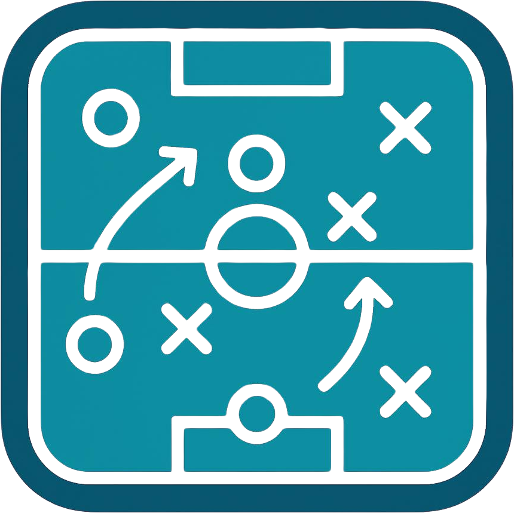

01
Core idea
Can you explain in a few sentences what your team is trying to do and which choices define your game most clearly?
Question: if a new assistant joined today, would they understand what you value without having to guess?

This checklist does not tell you what football to play. Use the ten questions to review what is clear in your model, what players need to demonstrate and how you will observe it in training and matches. At the end, choose one priority for next week.
Can you explain in a few sentences what your team is trying to do and which choices define your game most clearly?
Question: if a new assistant joined today, would they understand what you value without having to guess?
Is it clear how you want the team to progress, occupy space, create advantages and reach finishing areas?
Observe: which player decisions show that this intention is happening?
Have you defined how the team protects space, presses, guides the opponent and reorganizes without possession?
Observe: which behaviours are non-negotiable and which depend on context?
Do players know what to notice and decide in the first seconds after winning the ball?
Question: when should they accelerate, protect the ball or reorganize?
Is there a clear intention for the reaction to losing the ball and for the moment when immediate pressure is not possible?
Question: who reacts, who protects, and what signal triggers reorganization?
Are your principles translated into actions you can genuinely recognize in training and matches?
Avoid: concepts that only sound good. Prefer behaviours that can be seen, described and discussed.
For each important behaviour, is it clear what the player needs to perceive before deciding?
Question: what information in the game should guide the player's action?
Do the week's exercises genuinely create situations where these behaviours and decisions can appear?
Check: do the objective, space, player numbers, rules, restarts and coaching interventions reinforce the intention, or simply fill time?
Before the match, have you decided which signals will help you recognize whether what you trained appeared on the pitch?
Separate: recorded data, coach observation and interpretation. A number alone does not prove causation.
After the match, can you connect evidence to next week's priorities without rebuilding the whole reasoning from scratch?
Close the loop: what should stay, what should change, what needs more training, and what evidence do you want to observe next?
GamePlan was built to connect this sequence without replacing your decisions as a coach.